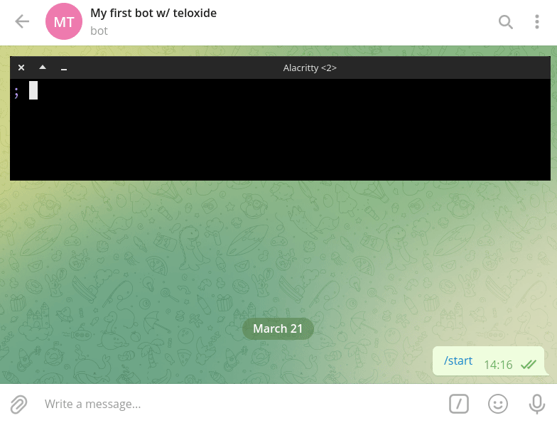
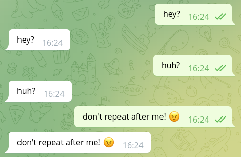
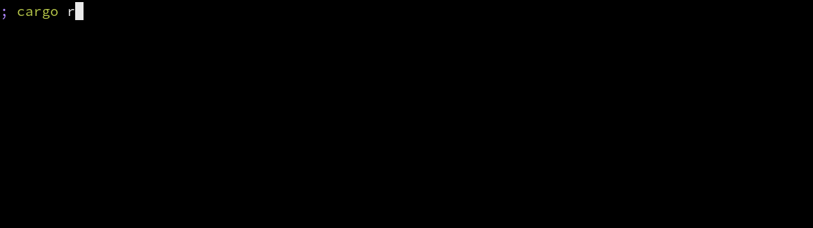
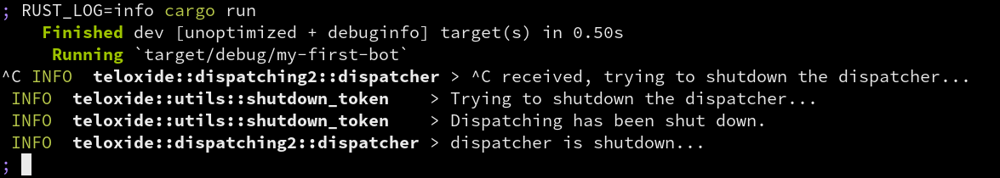

Introduction
Note: this book is very much work in progress. Use with caution.
This book is a user-guide for the teloxide Rust library. Teloxide is a full-featured framework that empowers you to easily build Telegram bots using Rust. It handles all the difficult stuff so you can focus only on your business logic.
This book will guide you through creating and writing your bot with teloxide and teach you how to use different teloxide features.
Note: teloxide uses Telegram Bot API under the hood, if you want to write mtproto-bots, you need a different library. For example: gramme.rs.
Creating bot with BotFather
Note: if you already know how to create a bot with BotFather, you can skip this chapter. There is nothing teloxide-specific in this.
To create a Telegram bot, you need to use @BotFather.
Bot Father is a bot itself, that provides commands to manage your bots.
To create a new bot, use /newbot and then answer questions from Bot Father.

The first question is bot name. This is what you'll later see at the top of the chat with your bot. The name can easily be changed later, so there is nothing to worry about.
![Dialog in telegram. BotFather: Good. Now let's choose a username for your bot. It must end in bot. Like this, for example: TetrisBot or tetris_bot. Author: b16d9e2bb44a4b728_bot. BotFather: Done! Congratulations on your new bot. You will find it at t.me/b16d9e2bb44a4b728_bot. You can now add a description, about section and profile picture for your bot, see /help for a list of commands. By the way, when you've finished creating your cool bot, ping our Bot Support if you want a better username for it. Just make sure the bot is fully operational before you do this. Use this token to access the HTTP API: 5284707973:AAEABD5lZTJ7XKqXOUnoH9tTYPDr796u4HA Keep your token secure and store it safely, it can be used by anyone to control your bot. For a description of the Bot API, see this page: https://core.telegram.org/bots/api](./img/ch-01-pic-02.png)
The second question is the bot's username, ie the @-tag with which you'll be able to mention the bot.
The username can contain a-z, A-Z, 0-9 and _ characters and must end in a bot (case insensitive).
This is much more important that the name, since you can't ever change the username of the bot.
Choose wisely.
The "token to access the HTTP API" is the bot token that will be used to control bot with teloxide. As Bot Father mentions, you need to keep the token in secret, since it can be user by anyone.
In case the token somehow leaked you can change it via Bot Father.
Use /mybots command, then choose the bot, click "API token" and click "Revoke current token":

There are a lot of things that you can change about your bot (eg profile picture) via /mybots command.
You may want to check them yourself.
Some settings that affect bot capabilities:
- Bot Settings
- Inline Mode (allows to use bot in any chat by typing
@username_of_the_bot ...) - Allow Groups? (you can disallow addition of the bot to groups)
- Group privacy (see privacy mode)
- Payments (allows to accept payments through bot)
- Domain (allows to you to use telegram to identify users on your site)
- Inline Mode (allows to use bot in any chat by typing
Writing your first bot with teloxide
In order to use teloxide you first need to create a Rust project with cargo:
$ cargo new my-first-bot --bin
Note: this book assumes that you already have basic knowledge of Rust and have
cargoinstalled. If you don't have it, we recommend reading The Rust Book.
Teloxide is an async library, so in order to use it you need an async runtime like tokio.
Add tokio and teloxide dependencies to Cargo.toml generated by cargo new:
# Cargo.toml
[dependencies]
tokio = { version = "1.17", features = ["rt-multi-thread", "macros"] }
teloxide = "0.9"
Note: teloxide currently requires
tokioand won't work with other runtimes.
Now you can start writing your bot. First, you'll need to create an async entry point to the program:
// This is needed to run `async` main function via tokio runtime #[tokio::main] // Returning result from main allows for easier error handling async fn main() -> Result<(), Box<dyn std::error::Error>> { // ... Ok(()) }
Then, you can create a bot using Bot::new and auto_send extension
(we'll cover what auto_send does in later chapters):
use teloxide::prelude::*; #[tokio::main] async fn main() -> Result<(), Box<dyn std::error::Error>> { // Replace TOKEN with the token you've got when creating the bot let bot = Bot::new("TOKEN").auto_send(); Ok(()) }
Then, try sending yourself a message:
use teloxide::{prelude::*, ChatId}; #[tokio::main] async fn main() -> Result<(), Box<dyn std::error::Error>> { let bot = Bot::new("TOKEN").auto_send(); // replace 0 with your user id let your_id = ChatId(0); bot .send_message(your_id, "Hi!") // `.await` is needed to wait for an async operation // `?` propagates possible errors .await?; Ok(()) }
Note: you can get your id from @ShowJsonBot (message -> from -> id).
Note: Telegram bots can't initiate a dialog, so you need to write to the bot first.
Now you can run the bot and it should send you a "Hi!" message:

Managing bot token
Keeping the bot token in source code is not a good idea for multiple reasons:
- every time you'll want to change the token (e.g. to move from the test bot to a production one) you'd need to recompile the program
- It's easy to accidentally commit the token that is inside the source code into a VCS like git
Instead, you normally either pass the token as a command line argument or via environment variables.
For the latter teloxide provides a handy Bot constructor -- Bot::from_env.
It gets the token from the TELOXIDE_TOKEN environment variable.
#![allow(unused)] fn main() { use teloxide::prelude::*; let bot = Bot::from_env().auto_send(); }
Reacting to users
A bot that just sends messages may be all you need, but often you want to react to the user's input.
For this teloxide provides a variety of constructs.
The simplest option to process user's input is called "repl".
To use it you just need to provide a bot and a function to it. Then, the function will be executed on each message from the user:
use teloxide::prelude::*; #[tokio::main] async fn main() -> Result<(), Box<dyn std::error::Error>> { let bot = Bot::new("TOKEN").auto_send(); teloxide::repl(bot, |message: Message, bot: AutoSend<Bot>| async move { // There are non-text messages, so we need to use pattern matching if let Some(text) = message.text() { // Echo text back into the chat bot.send_message(message.chat.id, text).await?; } // respond is an alias to `Ok()` with a error type compatible with teloxide respond(()) }).await; Ok(()) }

To stop the bot running in a repl, you can press ctrl + C.
Note that it can take some time to stop the bot:

Logging
Teloxide uses the log facade crate.
It may be a good idea to add a logging implementation, so you can see logs from teloxide or use logging yourself.
There are a lot of logging implementations (see log documentation) to choose from, but as a start you can try pretty_env_logger.
For this add a dependency to Cargo.toml:
pretty_env_logger = "0.4"
And call the init function somewhere near the beginning of the main function:
use teloxide::prelude::*; #[tokio::main] async fn main() -> Result<(), Box<dyn std::error::Error>> { pretty_env_logger::init(); let bot = Bot::new("TOKEN").auto_send(); teloxide::repl(bot, |message: Message, bot: AutoSend<Bot>| async move { if let Some(text) = message.text() { bot.send_message(message.chat.id, text).await?; } }).await; Ok(()) }
And that's all! You should be able to see logs:

Sending requests
We've already sent simple requests in previous chapters, but we didn't explain how they work. In this chapter we'll dive deep into how requests are implemented in teloxide.
When in previous chapters we've called send_message, the method came from a trait called Requester.
Requester is a trait that is implemented by Bot (and bot adaptors, more on that in the next chapter) and is included in the prelude.
use teloxide::prelude::{*, ChatId}; #[tokio::main] async fn main() -> Result<(), Box<dyn std::error::Error>> { let bot = Bot::new("TOKEN").auto_send(); // replace 0 with your user id let your_id = ChatId(0); bot .send_message(your_id, "Hi!") .await?; Ok(()) }
send_message has optional parameters that can be provided like this:
use teloxide::prelude::*; #[tokio::main] async fn main() -> Result<(), Box<dyn std::error::Error>> { let bot = Bot::new("TOKEN").auto_send(); // replace 0 with your user id let your_id = ChatId(0); bot .send_message(your_id, "Hi!") .protect_content(true) // <-- optional parameter! .await?; Ok(()) }
Normally you'd also need to call .send() before .await, but .auto_send() on the bot allows you to not do that (more on that later).
How it actually works
There are three parts to Telegram methods in teloxide: payloads, requests and requesters.
Payloads
Requests parameters are stored in plain structures called payloads, for example:
#![allow(unused)] fn main() { // teloxide::payloads pub struct SendMessage { pub chat_id: ChatId, pub text: String, pub parse_mode: Option<ParseMode>, // optional parameters use `Option<_>` pub entities: Option<Vec<MessageEntity>>, pub disable_web_page_preview: Option<bool>, pub disable_notification: Option<bool>, pub protect_content: Option<bool>, pub reply_to_message_id: Option<i32>, pub allow_sending_without_reply: Option<bool>, pub reply_markup: Option<ReplyMarkup>, } }
Such structures implement Payload trait that specifies the name of the method and the return type:
#![allow(unused)] fn main() { impl Payload for SendMessage { type Output = Message; const NAME: &'static str = "SendMessage" } }
For all payloads there is also a <Payload>Setters trait that is implemented for any HasPayload<Payload = <Payload>>.
*Setters traits add builder-functions that allow to change the payload (like protect_content in the example above).
All setter traits are reexported "as _" in the prelude, so you don't have to import traits every time you want to use an optional parameter.
HasPayload is a trait that just allows to get a & or &mut reference to a payload.
HasPayload is implemented for all payloads and simply returns self.
Requests
Requests are types that hold payloads + the information needed to make a telegram request (e.g. bot token).
Such types implement Request trait that looks roughly like this:
#![allow(unused)] fn main() { pub trait Request: HasPayload { type Err: Error + Send; async fn send(self) -> Result<Output<Self>, Self::Err>; // some less important items are left out } pub type Output<T> = <<T as HasPayload>::Payload as Payload>::Output; }
Requests also implementHasPayload, so setters work on them tooErris the type of the error that is returned when the request fails- It's normally
RequestError
- It's normally
sendsends the request and returns the result
Requester
The final piece in this puzzle is the Requester trait that looks roughly like this:
#![allow(unused)] fn main() { pub trait Requester { type Err: std::error::Error + Send; type SendMessage: Request<Payload = SendMessage, Err = Self::Err>; fn send_message<C, T>(&self, chat_id: C, text: T) -> Self::SendMessage where C: Into<ChatId>, T: Into<String>; // ~90 other methods } }
send_message(and all other methods) return types implementingRequestwith a matching payload- All requests return the same error type (
Err) - Some parameter types are auto-converted with
Into<>- This allows to pass
i64asChatIdor&strasString - Some parameters are also converted via
IntoIterator
- This allows to pass
Requesteris lazy and only returns builders, but doesn't send requests eagerly
And that's all you need to know about how requests work in telegram!
The system is somewhat complicated and convoluted, but in the end it allows for a nice syntax of bot.method(...).optional(...).send().await?.
Bot adaptors
Bot adaptors are types that wrap other types that implement Requester trait and implement Requester trait themselves.
This allows to easily add opt-in requester behaviour.
In this chapter we'll see what adaptors does teloxide provide.
AutoSend
This is probably the most useful adaptor.
Its request types implement Future, which allows to use .await directly without using .send().
Note:
AutoSendmust be the outermost adaptor, or you won't be able to.awaitrequests directly
DefaultParseMode
Allows specifying a default parse mode that will be used for all methods that support parse mode.
CacheMe
Bots user object rarely changes, so we can cache it.
Trace
Logs every request, useful for debugging.
ErasedRequester
That one is a little different from other adapters.
While most adaptors have a generic that represents what they are wrapping, ErasedRequester doesn't.
ErasedRequester can be created from any type that implements Request and doesn't change behaviour.
It is useful if you need to store bots with different types in the same variable/array/etc.
See this example: core/examples/erased.rs.
Update dispatching
TODO: write about dispatching2 here
Appendix
The following sections contain additional information you may find useful.
A - teloxide-core
As you may, or may not have noticed, teloxide consists of two crates -- teloxide (main crate) and teloxide-core (core crate).
Main crate depends on the core crate and reexports everything from it.
Core crate contains
- Telegram types (like
Update,Message,Chat) - Everything related to making requests (payloads, requests, requesters)
- Bot adaptors (like
AutoSend,ErasedRequester) - Errors
i.e. everything that is related to the Telegram Bot API.
The main crate on the other hand contains
- Reexports of everything from core crate
repls- Dispatching systems (that allow you to process updates)
- Update listeners
- Utils to work with formatting
- Utils to work with commands
i.e. the more high level stuff built on top of the Telegram Bot API.
Normally you want to use teloxide, but in rare cases when you don't need any high-level APIs, you may use teloxide-core directly.
B - Update listeners
TODO: write this after webhooks PR is merged.